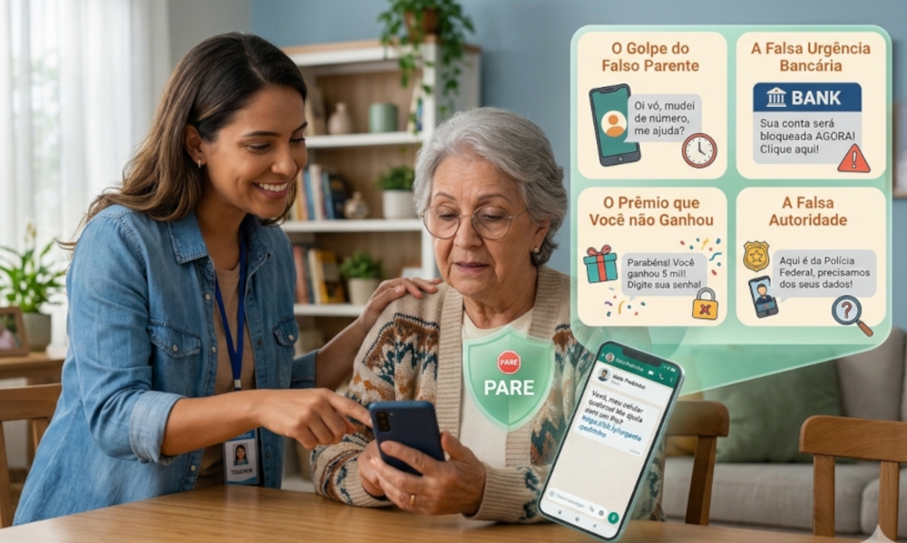

🎭 Engenharia Social: O Jogo das Emoções
1. Os golpistas virtuais são como atores de teatro: eles criam uma história muito convincente para nos fazer agir sem pensar. Eles não atacam o seu celular, eles atacam os seus sentimentos.>
🎣 As 4 Armadilhas do Coração
Para nos pegar de surpresa, os criminosos costumam usar quatro sentimentos muito humanos:
1. O Medo e a Urgência: É a ligação dizendo que sua conta vai ser bloqueada ou que seu nome vai para o SPC se você não resolver "agora mesmo". Eles usam o susto para você não ter tempo de pensar.
2. O Amor e a Preocupação: É o golpe do "falso parente". Alguém manda mensagem fingindo ser seu filho ou neto, dizendo que quebrou o celular e precisa de dinheiro urgente para uma emergência. O nosso carinho nos faz querer ajudar correndo.
3. A Autoridade: O golpista se passa por um gerente de banco, um policial ou um funcionário do governo. Ele fala de forma séria e bonita para fazer você acreditar que é obrigado a obedecer.
4. A Ambição (O Ganho Fácil): Mensagens dizendo que você foi sorteado, que tem um "dinheiro esquecido" para sacar ou uma grande herança de um parente distante.
🛑 Como os Golpistas agem na prática?
1. Eles pesquisam a sua vida: Os golpistas olham fotos que você posta com a família na internet para saber o nome dos seus netos, onde você passeia e o que você gosta de fazer. Eles usam isso para parecerem íntimos.
2. Eles fingem que te conhecem: Na ligação ou mensagem, eles começam com "Oi, vó!" ou "Oi, tudo bem? Lembra de mim?". Eles esperam você falar um nome ("É o Joãozinho?") para depois dizerem "Sim, sou eu!".